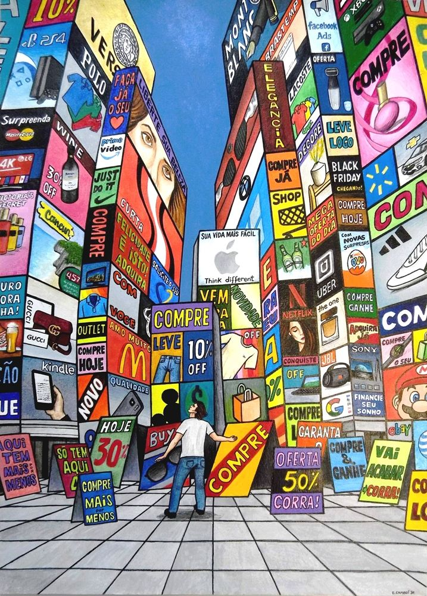

¿Qué es el reciclaje?
El reciclaje es la obtención de materias primas a partir de desechos, introduciéndolos de nuevo en el ciclo de vida. La transformación que sufren los residuos les permite restituir su valor económico y retrasar o evitar su disposición final.
¿Cómo puedes ayudar?
WashLava antes
Lava los envases y las latas antes de tirarlas para evitar vertidos tóxicos en el agua.

ArticleReutiliza lo que no sirva
Las hojas que sobran de los cuadernos, únelas y forma uno nuevo.

Shopping_CartCompra de manera consciente
Haz un lista de lo que realmente necesitas, de esta manera evitarás comprar cosas innecesarias y ahorras dinero.

ApparelRecicla ropa en buen estado
La ropa en buen estado que ya no empleas puede tener una segunda vida. Considera donarla a organizaciones benéficas o buscar centros de recogida de ropa cercanos. De esta forma, estarás contribuyendo a la reducción de residuos textiles y apoyando a aquellos que puedan aprovecharla.

Shopping_BagUtiliza bolsas de tela
Cuando salgas a comprar, ya sea en el mercado tianguis o alguna cadena de supermercados, no olvides tu bolsa de tela para cargar los productos que lleves a casa.

Delete¿Qué va en cada contenedor?
Contenedor verde
- Echa aquí los restos de comida preparada o cruda, es decir, restos de fruta, verdura, carne, pescado y otros restos que surjan durante la preparación, como cáscaras de huevo, marisco, frutos secos.
- También es el sitio adecuado para pequeños restos de jardinería, como ramos de flores o plantas.
- Que vaya siempre en bolsa compostable por higiene. Puedes comprarlas o reutilizar las de la sección de frutas y verduras de tu supermercado, que suele ser compostable. Procura no introducir alimentos líquidos o muy grasos, porque retrasan la descomposición de los restos orgánicos.

Contenedor azul
- En el contenedor azul debes echar folios, periódicos, revistas, libros, cajas de cartón, folletos publicitarios, hueveras de cartón, papel de envolver, etc.
- Separa los componentes que no sean de papel, es decir, quita cuerdas, cinta adhesiva, grapas, clips o espirales.
- El cartón debe estar plegado para que ocupe el menor espacio posible y no debes de meterlo en bolsas de plástico.
- El cartón debe estar plegado para que ocupe el menor espacio posible y no debes de meterlo en bolsas de plástico.

Contenedor gris
- Envases metálicos, como las latas de refrescos, chapas, tapas de tarros o aerosoles vacíos.
- Envases de plástico, como envases de yogur, botes de detergente, bandejas de alimentos, bolsas de tiendas y vasos de plástico.
- Lo ideal es que, cuando los tires, estén vacíos para evitar los malos olores y que los aplastes para que ocupen menos espacio. Comprímelos sin el tapón y enróscalo luego .

ChargerAprende a reciclar electrónicos
¿Sabes lo que es el e-waste y la cantidad que se produce a nivel mundial?
Cuando un aparato electrónico ha llegado al final de su vida útil o ya no ejerce su utilidad original, puede considerarse e-waste o residuo electrónico. Técnicamente, se trata de CUALQUIER APARATO QUE INCORPORE UN ENCHUFE O UNA BATERÍA.

CloseDesecho incorrecto.
La población desecha la e-waste directamente en el medio ambiente , en contenedores comunes o vertederos. Con esto, la contaminación en la naturaleza aumenta y también el riesgo de generar problemas de salud para la población.
DoneDesecho correcto.
Los usuarios deben ir a un punto de recogida adecuado y depositar el producto ya utilizado. Las empresas, entonces,recogerian este material y lo enviarían al reciclaje.
A continuación de compartimos links de algunas opciones para recilcar electrónicos:
Dia Mundial del reciclaje Cada 17 de mayo se conmemora el Día Mundial Reciclaje. La efeméride fue establecida en 2005 por la Organización de las Naciones Unidas para la Educación, la Ciencia y la Cultura (UNESCO) con el objetivo de generar conciencia sobre la gestión adecuada de los residuos.
En México una persona genera más de un kilo de residuos sólidos al día, al año se producen aproximadamente 42 millones de toneladas.
Devolver a algo su estado original: “Le restituyeron al altar su brillo original”.
La materia prima son los recursos más importantes para desarrollar las actividades productivas porque aportan los materiales que se van a transformar en mercancía posteriormente mediante los procesos productivos en las industrias.
Conjunto de muebles y accesorios de una casa, en especial los utensilios de cocina.
Las bolsas compostables son productos diseñados para descomponerse de manera natural y segura en un ambiente de compostaje. A diferencia de las bolsas de plástico tradicionales, que tardan siglos en descomponerse, las bolsas compostables están fabricadas con materiales biodegradables y renovables.
Inicio